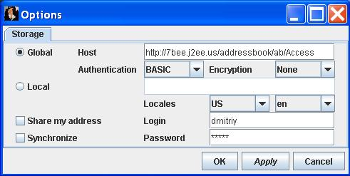

jAddressBook Home Pageaka Address Book, Contacts, Password management |
Start Java client No account yet? Sign up |
New! Mobile browsers support
Online Addressbook
Sticky notes, block notes, address books, business card holders and many other electronic or paper folders currently used for keeping and managing personal records. They are contact information, useful notes, to do lists, URLs, thoughts, accounts details, insurance information, passwords, shopping lists, warranties, businesses locations and addresses, and many other records like (assets & inventory, budgets, chores, creative corner, diet, financial records, fitness, goals & plans, journal, media library, medical records, projects, recipes, restaurants, services & maintenance, special moments, vehicle maintenance, veterinarian records, wine cellar) helping us do not get lost.
Quickly to find a piece information when it needed. By to find means not only knowledge where records are stored, but a possibility to access these records. Carrying all records in a briefcase looks ridiculous nowadays. However storing everything in a centralized location accessible over Net is not wise either. So solution about storage is something in a middle as having multiple copies of personal records with a personal certificate protected centralized storage and a rich set of different devices synchronization features. Of course, most of storages have to be accessible using a cell phone or PDA.
Google is trying to sell us pushing using a search instead of good record organizations. Forgot a right keyword and you got lost, a search won't help you, say more result of any search will include a lot of garbage you have to sort anyway. How will you know which record with address of your friend is an actual and which is outdated? How you will separate a business partner and a girl friend contacts having similar names? You won't be surprised that all Google's system implementations are based on sorting, so if they would used search, then you wouldn't ever get result. So, how to sort personal records? It's quite easy, every Google's engineer will say you - use a tree.
Recently I spoke with some member of PayPal team. He agreed that search isn't solution, however he valued more tagging. Okay, I told him, let's consider a tree as tagging model, node name is a tag and all under it just tagged items. Can jAddressBook fit in this model? Currently not, however allowance of sharing items between nodes will carry it.
Sort of.
jAddressBook will give you a possibility to manage and organize your personal records in a simple, easy accessible way. Some type of stored information already have pre-filled formats, like contact information including storing telephones, e-mails, addresses (with direct connection to map), bookmarks, chat ids, pictures, passwords, account and rich text format personal notes. You will organize all information in a way more comfortable for you. Of course you will guide your structures and never will get lost. And of course you can search but I'm sure you never will do it again. So, what are you waiting for? Try a demo version, it's secure, free, and ads free!
Check out this site. It's nice. In addition to personal records it provides a calendar and collaboration on level of a family. Another competitor is here, however their business model is unclear and less features.
Distributed servers network with replication, web and native clients for electronic devices including nice printing capabilities looks for me as a solution I'm working on. Do you mind to join my team? No? In this case just wait or try beta version of jAddressBook.
- Do you know that you can use web started Swing jAddressBook client to upload your contacts in XML or CSV format exported from Outlook? Select File/Import>Other Address Book... and select Outlook CSV. It work with gmail exported contacts too and probably will work with CSV exports from many others address book programs.
- Do you know that you can create own account without a mail server and confirmation e-mail? If you would like to run only personal address book locally, then you can activate your account editing XML file under your login name in $jAddressBook_home/users directory. Open the file in any text editor and add line:
<entry key="active">true</entry>
Why jAddressBook is so powerful and can compete with other similar products? An answer is quite simple, jAddressBook doesn't use any fixed schema for storing data. it means that you can put any information in contact entries and organize them in node items of your data tree.
Looking for young individuals, smart, and energetic who know web design and JavaScript or willing to learn it in process of work. Requirements for more experienced candidates are:
Although requirements look a bit tough to match, do not be shy and send your resume for consideration to jAddressBook HR. Any format including MPEG4 is accepted.
For development from sources, download 7Bee Java build tool.

Nothing can be easier, when you use 7Bee. Have you downloaded and installed it yet? You will need one more download, unless you are Tomcat addicted. Tiny Java J2EE container, that's it.
Note that after deployment war file, you may need to edit WEB-INF/config/jaddressbook.properties. URL pattern to access web UI will be http://yourhost/addressbook/ unless you edited web.xml.
jAddressBook is powered by fullstack Aldan3/WebBee framework, read more here.
Try web UI here.
Open options dialog and set host address as on a picture below. Set name and password to values you used for registration. A https based version is coming, so do not store any sensitive contacts for awhile.


This project includes a lot of modern stuff I didn't use before as extensive servlet API features and Ajax. I couldn't succeed in implementation without help of the following people:
Some feature highlights...Passwords managementYou can secure manage passwords to your online accounts. jAddressBook transfers passwords to page in an encrypted form, so a browser, proxy or some other caching mechanism can't show your passwords in clear text. You have ability to see your passwords in clear text provided by Ajax calls. Since these calls use HTTPS, your password can't be discovered by sniffers and other traffic analyzers. Version 1.4 adds even more security, you can use your personal key to get password sensitive information encrypted on server side, so nobody can get your passwords after except you as long as you do not lose your secret key. Fully managed folders hierarchyNow you can create unlimited depth of folders hierarchy to store contacts and other information. For example you can store information about shopping items, business projects and so on. You can move folders along hierarchy and copy items from one folder to another. Getting maps from address itemsNow you can get Yahoo map of addresses stored with a contact. Build media catalogsShare list of your audio albums, movies, home videos and so on with your friends and family. New features I'm working onCertificate managementCreate or add certificates used for encryption different parts of your stored information. You chose to do not store certificate on server side, so it will provide you unbeatable level of security. You can safely keep information about your girlfriends, credit card numbers, or spy contacts. Your purse get lost or stolen, no worry. Get all bank telephone and CC numbers from one page and cancel all your cards. Lost your flush drive with certificate? No worry, it protected by password only one password you have to memorize. Keep a spare certificate in a deposit box of your bank for further protection. jAddressBook mobileAccess all your contacts from a browser of you mobile phone, and make calls. It's free (but yes, your wireless plan could still charge you).Group based contact information sharing with auto update featureIt's most exciting feature of jAddressBook. Now all your friends who used jAddtresBook can share group information and auto-update contact information. Auto login to account from password management links Free yourself from remembering and entering password. Use pseudo URL variable to be filled with your account information and get login in just by one click. (Note one click login is patented by the author, so do not spend time on patent research here.) Send e-mail using specific e-mail programYou can select which e-mail program will be used for compose new e-mail message. It can be any web based e-mail client as MSN/Hotmail, Yahoo, Mochamail, or Gmail. Share iPod play listsThis feature allows to connect jAddressBook to your iPod and upload play list information in an address book item. Now make it sharable with automatic purchasing link to iTunes or another online music store. Chatting with jAddressBook user or any Internet user directly from your browserChatHouse integration gives a possibility to chat with any Internet user directly from your browser, no any additional chatting program installation requiring. Send invitation for chat directly using jAddressBook shared area or in e-mail. Note ChatHouse is the first program started using server push technology in 1999. Now this technology got name comet and widely used by other companies. Sharing interesting book info, gadgets info and any other goodiesYou can share information with purchasing link to books, electronics, clothes and many many other goodies with cheapest prices and reliable merchants. |
Dmitriy @ jAddressBook